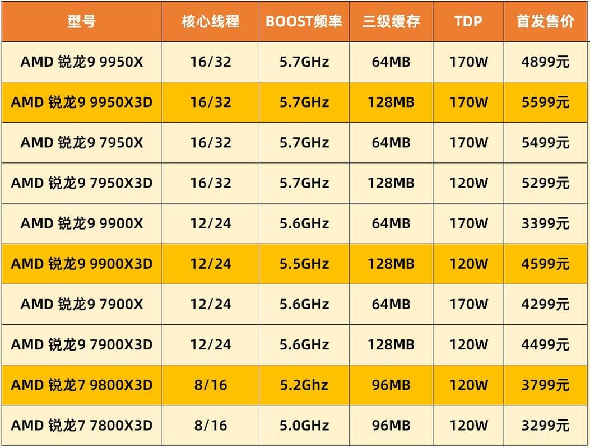

AMD Ryzen 9 5950X

AM4 平台收官旗舰，16 核 32 线程加速频率 4.9GHz，将消费级多核性能推上新高度，游戏与创作兼顾且 105W 能效表现出色，是上一代发烧级平台公认的标杆之作。
客观评测
5950X 在 AM4 主流平台上塞入 16 核 32 线程，凭借 Zen 3 的 IPC 优势把消费级多核与单核同时推向高位，Cinebench、Blender 等负载相比前代提升两位数百分比。105W TDP 比对手 16 核产品更冷静，PBO 还能在散热充足时自动提频。无核显、不带散热器是它为定位付出的成本。对创作者而言，它是 AM4 时代的终点站旗舰。
主观点评
在 DDR5 尚未普及的年代，5950X 给了老平台用户一次体面的巅峰体验：换颗 CPU，主板内存全留用，性能直接起飞。32 个线程全开跑渲染时的爽快感，和游戏里依然能打的帧数，让它成为“一台机器干所有事”的代名词。它不便宜，但对靠电脑吃饭的人来说，省下的时间就是赚到的钱。AM4 生涯至此收官，也算功成身退。
优点与不足
- 16 核 32 线程，渲染导出效率极高
- 游戏性能同样不拖后腿，全能无短板
- AM4 平台成熟稳定，BIOS 支持周期长
- 首发价格较高，且不附赠散热器
- 双 CCD 设计存在跨 CCD 延迟，个别游戏表现略逊 8 核型号
参数规格
| 核心/线程 | 16 核 32 线程（Zen 3，双 CCD） |
|---|---|
| 基础频率 | 3.4GHz |
| 加速频率 | 4.9GHz |
| 缓存 | L2 8MB + L3 64MB |
| 制程 | TSMC 7nm |
| 插槽 | AM4 |
| 内存支持 | DDR4-3200，双通道，最大 128GB |
| PCIe | PCIe 4.0 ×16，共 24 条通道 |
| 核显 | 无，需搭配独立显卡 |
| 基础功耗 | TDP 105W |
| 超频 | 不锁倍频，支持 PBO 自动加速 |
| 发布 | 2020 年 11 月 |